{kind=link}
{kind=link}
{kind=link}
{kind=link}
{kind=link}
{kind=link}
{kind=link}
{kind=link}
{kind=link}
{kind=link}
{kind=link}


Trumpeter 1/48 Vickers Wellington Mk. 1 C
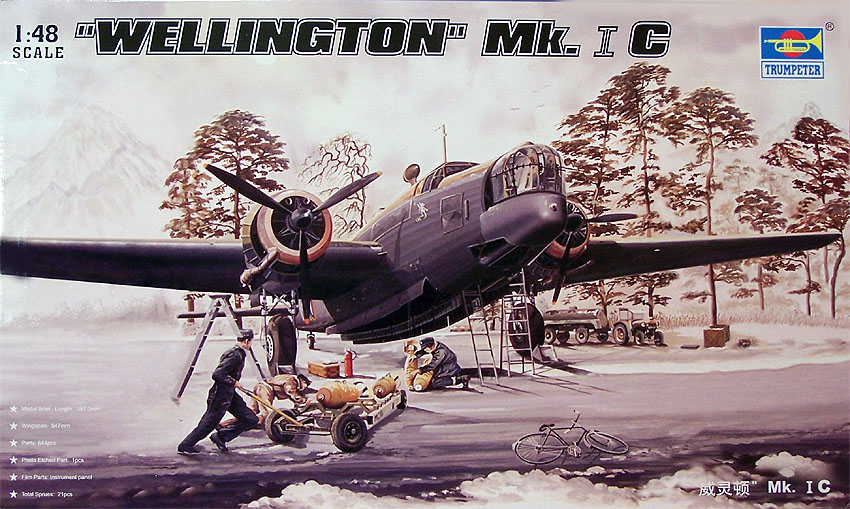
Kit #2808
MSRP $109.95
Images and text Copyright © 2006 by Matt Swan
Developmental Background
The geodetic basket weave structural design that enabled builders to create the huge heavier than air ships prior to the Second World War was utilized to create the Vickers Wellington. This construction method resulted in very long assembly times but gave the Wellington an incredible ability to absorb combat damage and return to base. The design allowed loads to be spread throughout the structure and it was not uncommon to see these aircraft returning from missions with large sections of the fuselage shot away.
This Vickers bomber first flew in June 1936 and with no immediate pressure for wartime production the geodetic construction did not present a problem. Shortly after the type was introduced into service it was nicknamed the “Wimpy” after J. Wellington Wimpy who you may recognize as the cartoon character Popeye’s friend. By 1942 technology had outpaced the Wellington and it was now considered slow and to have a limited bomb load. By 1943 the “Wimpy” was completely obsolete and had been replaced by Lancasters and Halifaxes but for those first few years it held the line as England’s most important land bomber. Overall about 11,461 examples of the Wellington had been built in ten different variations. Today only two survive.
The Kit
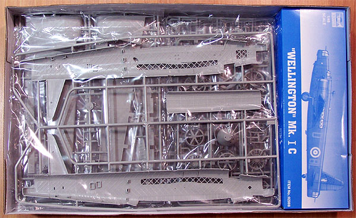
Many years ago when I first started the polystyrene adventure I had a vision of building all the great heavy bombers of the Second World War in 1/48 but unfortunately there only existed the B-17, B-24 and Lancaster. Today I am close to realizing that vision with the recent release of the Halifax and now the Wellington. As each new large aircraft model hits the market I see large boxes that hint and large contents but too often the package is deceptive, not so this time. The Wellington arrives in a box on par with that of the infamous Monogram B-17 or B-24 but so filled with parts sprues that they have no opportunity to even shift within the packaging. We have fourteen parts trees of light gray high pressure injection molded pieces grouped in about seven poly bags along with a smaller box containing two sprues of clear parts, white metal landing gear and photo etched detail accessories. The use of metal landing gear at this scale is something new for Trumpeter and the quality of these parts is well above anything I’ve seen before in metal pieces for 1/48 scale models. Not only are the primary gear struts metal but well machined axels are included for each wheel.
Plastic parts are all well molded with no flash or sink marks and minimal mold separation lines. Interior detail is very good and with the large amount of clear panels on the Wimpy all your work should be easily visible when completed. The geodetic pattern on the wings and fuselage looks slightly exaggerated but with the dark colors of this aircraft type it will most likely blend in fairly well and give a good impression. Included in the gray parts is a large selection of bombs to load your model with various mission parameters. The clear parts all display good clarity which will most likely be enhanced with a dip in Future. The instrument panel is provided as a clear part as well with an acetate sheet for instrument details. The kit includes a single photo etched sheet of steel parts that are used to line the interior of the main landing gear bays. A few small detail pieces are here also.
During test fitting it looks like all the parts fit well with the wing panels lining up properly and being of the same size, fuselage pieces mate up nicely and interior bulkheads appear to fit well. Taking a count of the parts we have three hundred seven gray parts devoted to the primary aircraft model, two hundred seventy six pieces devoted just to the various bomb loads, thirty clear parts, six cast metal parts for the landing gear along with three vinyl tires and thirteen photo etched steel pieces for a total of six hundred thirty five pieces not including acetate panels and decals. I think this one takes the prize for highest parts count in my stash.
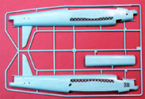
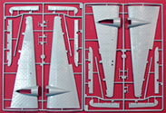
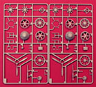
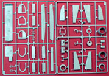
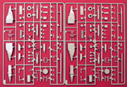
You may click on each of these small images to view a larger picture.
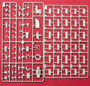
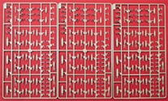
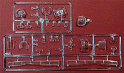
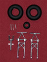
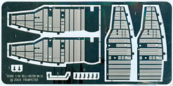
Decals and Instructions
Trumpeter provides the modeler with a nice instruction booklet reminiscent of the old Pro Modeler booklets. This is similar to the A4 size sheet of paper and opens with a profile drawing of the Wellington and basic model construction tips. This is followed by two pages of parts maps before launching into the actual construction steps. The assembly steps consist of thirty five exploded view drawings that appear well done and clean. They offer some color call-outs and list some Gunze paint codes however there is no paint code chart included with the instructions. Exterior painting instructions and decal placement guides are provided on a separate A3 sized sheet in full color, this thing looks good enough to hang on your wall after you’ve completed the kit.
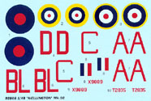
The kit decal sheet is a small sheet that includes marking for only two aircraft. You may click on the image at right to view a full sized scan. The decals have very good color quality, good color density and good print registry. They do not include any service stencils or warning markings which is somewhat disappointing. The decals appear to be nicely thin and previous experience with Trumpeter decals indicates they should behave nicely with most common setting solutions.
Conclusions
I’ve been waiting a long time for a model kit of this subject and the wait has been worth it. This is a very well done kit with great parts engineering and parts fit. The instructions appear to be complete and easy to follow. Interior painting instructions are not comprehensive and the modeler will most definitely need to consult other reference material for this area. The Geodetic patterns are exaggerated but will most likely blend in well with any late war paint scheme. The decals provided are of good quality but leave much to be desired for service and warning stencils. The aftermarket industry is already gearing up with other more complete marking options for this kit, it just doesn’t seem right though to have spent nearly a hundred bucks for a kit and still have to look for aftermarket items.
Currently Engines and Things makes a set of resin engine faces that could be used with the Wellington, Griffon is on the verge of releasing replacement resin wheels for this kit and Tally Ho decals ahs already sold out of their first two runs of aftermarket decals. I’m sure we will be seeing these back on store shelves shortly. Xtradecal has a set out already for the Mk. 3 while Pavla Models is putting the final touches on a radio operator’s station for this kit. Trumpeter is not done with development of the series either having already announced the upcoming release of a Ml. 3 variant.
Even with such a staggering parts count this kit should be within the capabilities of even the average skill level modeler, the key ingredient will be patience followed by a good small parts control program. I recommend this kit to all modelers and give it a very good rating.